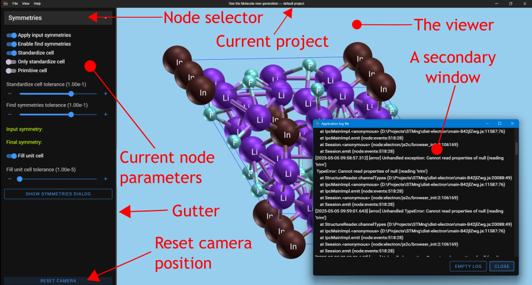

See The Molecule new generation (STMng) is a chemical and crystallographic structures visualization tool that implements some of the functionalities of the old STM4 visualization tool.
Unlike its predecessor, STMng is built on top of open source frameworks and libraries.
STMng screen

At startup the screen is divided in two areas: on the right the Viewer and on the left the Node controls panel.
Click on the separator between the two areas (the Gutter) hide the node control panel. Clicking again on it, that is on the left of the full screen viewer, unhide the panel.
On the title bar of the application window is visible the currently loaded project: the project file name or the “default project” mark.
The Node controls panel contains the Node selector that selects the node for which the controls are shown. Then the controls specific for the node. At the end there is a button that Reset the camera position in the viewer.
Some nodes and menu entries open a secondary window that can be positioned freely and resized with data and controls specific for its functionality.
Nodes are the building blocks of the graph that controls the STMng behavior. Each node could have inputs and/or outputs and could generate graphical objects to be visualized.
The application provides these listed nodes, but the ones made available to the user are collected in the loaded project. Instead all available nodes are present in the “default” project.
The project is the description of the nodes used, their interconnections
and their parameters.
The nodes provided by the project have their UI visible in the UI section of the screen.
The application comes with an hardcoded project, called default project,
that contains all the nodes shipped. It cannot be changed, but can be edited and saved.
The project or the default project are automatically loaded on application start.
The project file could also be loaded from the command line.
A project is a JSON formatted file with extension .stm
containing a JSON record with the following keys:
graph List the loaded nodes and their interconnections
viewer Optional section to collect the viewer 3D parameters
ui Optional section that collects the parameters for each node
Graph content
This section is a JSON record with the unique identifier of the node as key and the following content:
label: The label that appear in the UI selection panel
type: The type of node, that is its functionality
x: The (optional) X position of the node in the project editor
y: The (optional) Y position of the node in the project editor
in: The id of the node from which this node takes the input. It is missing if the node has no input or if the input comes only from the graphical scene
Project editor
The graph structure could be seen using the File → Project editor menu entry. This menu entry opens the Project editor. This editor makes possible the modification of the currently loaded project that, at the end, could be saved and becomes the current project.
Main menu and application shortcuts
System menu
File
Alt+F
Open the File submenu
View
Alt+V
Open the View submenu
Help
Alt+H
Open the Help submenu
File submenu
Load project from…
Control+O
Select and load a project file
Load default project
Control+D
Load the default project
Save project
Control+S
Save the project to the file from which has been loaded
Save project as…
Control+Shift+S
Save the project to a selected file. This file will be loaded automatically next time
Toggle the viewer extension, that is, hide the control panel on the left. The same effect is obtained clicking on the separator between the two panels
During development or calling STMng with the “-e” command line option, the following keys are also available:
Force reload
Control+Shift+R
Force reload of the application
Toggle DevTools
F12
Toggle development tools on the main window
DevTools on secondary
Control+F12
Toggle development tools also on the opened secondary windows
Show scene 3D
In the development tools console show the tree of graphical objects in the viewer
Help submenu
STMng documentation
F1
Open the STMng help (this file) in a browser
Current node documentation
Control+F1
Show help for the current active node in a browser
Show application log
Open the application log file in a new window. Here it is possible also to clear it
About
Control+A
Open the About dialog with info on the main libraries used in the application
Convenient shortcuts
Sliders with increment/decrement buttons
Clicking on the increment (+) or decrement (-) buttons with Ctrl key pushed multiplies the value change by 10. If the Shift key is pushed (alone or together with Ctrl key), the value is multiplied by 100.
Gutter
Clicking on the separator between the node interfaces panel and the viewer (the gutter) hides the node controls. Clicking again on the left side of the viewer unhide the panel.
Interaction with the viewers
Interacting with the viewer means moving the camera around the visualized object.
This interaction is done through mouse movements and using the keyboard arrows. Note that the same mouse actions are applicable to the Energy Landscape and Compare Structures viewers, but not the keyboard arrows shortcuts.
Terminology
Rotate
Rotate the camera around the scene center
Pan
Move the camera on the viewer plane
Zoom
Change the magnification of the camera without moving it
Dolly
Move the camera perpendicular to the viewer plane
Mouse
Drag with left mouse button
Rotate
Drag with right mouse button
Pan
Drag with center mouse button
Dolly
Mouse wheel
Zoom
Keyboard arrows
Any arrow
Pan
Control + any arrow
Rotate
Shift + any arrow
Zoom (Left and Down do the same, as do Right and Up)
Alt + any arrow
Dolly (Left and Down do the same, as do Right and Up)
Command line options
Usage: STMng [options] [project-file]
See The Molecule new generation is a chemical and crystallographic structure
visualizer that inherits some functionalities of STM4
Arguments:
project-file project file to be loaded
Options:
-V, --version output the version number
-t, --theme <theme> user interface theme (choices: "dark", "light")
-d, --default force load of default project
-v, --verbose verbose
-e, --enable enable developer tools in production build
-x, --extra <switches> extra command line switches
-h, --help display help for command
The “-x” switch pass the given switches to the internal processes. If more than one, they are
comma separated and if they pass a value, switch and value are separated by a “=”.
Verbose can be set also with the “STM_NG_VERBOSE” environment variable set to any value.
Developer tools can be enabled in production also with the “STM_NG_ENABLE” environment variable set to any value.
License
STMng by Mario Valle is licensed under Creative Commons License Attribution, Non Commercial, Share Alike 4.0 International (CC BY-NC-SA 4.0)
You are free to:
Share — copy and redistribute the material in any medium or format.
Adapt — remix, transform, and build upon the material.
Under the following terms:
Attribution — You must give appropriate credit, provide a link to the license, and indicate if changes were made. You may do so in any reasonable manner, but not in any way that suggests the licensor endorses you or your use.
Non Commercial — You may not use the material for commercial purposes.
Share Alike — If you remix, transform, or build upon the material, you must distribute your contributions under the same license as the original.